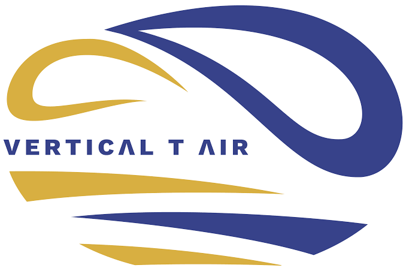

Hello! I’m Ambre, a third-year engineering student at ELISA Aerospace in France specializing in aeronautical and mechatronic engineering.
My fascination with aviation started early—wondering how aircraft fly and how they are built every time I boarded a flight as a child. During high school, I deepened this passion by spending time with a professional pilot at a flight simulator center, where I learned the rigor, composure, and quick decision-making required under pressure. Earning my BIA (French Aeronautical Initiation Certificate) gave me the opportunity to visit Air Base 106, further solidifying my ambition to build a career in flight.
Constantly seeking hands-on exposure, I participated in an aerospace immersion day at IPSA Toulouse, where I built model rockets, explored airport management, and expanded my network. I also completed two instructor-led ULM flights, discovering firsthand how dynamic real-world piloting is compared to a simulator.
Driven by this lifelong commitment, I naturally chose to pursue aerospace engineering. Having successfully passed my theoretical Private Pilot License (PPL) exam, I am currently working toward completing my practical flight training, aiming for a career as a pilot, flight operations engineer, or flight test engineer.

Autonomous Skydiver — PAC License
- Obtained the PAC certification, validating solo freefall capability and canopy control.
- Developed rigorous safety checks, sharp altitude awareness, and high-level decision-making under intense conditions.
- Demonstrated strong self-control and analytical focus directly linked to flight safety principles.
BIA — Aeronautical Initiation Certificate
- Acquired core theoretical knowledge in aerodynamics, flight mechanics, navigation, meteorology,English aviation terminology and aviation history.
- Explored military aviation operations and aircraft infrastructure during an official technical visit to Air Base 106 (BA 106).
- Validated a strong foundational commitment to aeronautical engineering and flight operations.